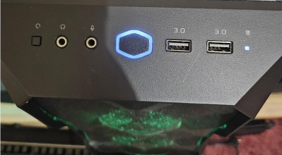

PC Won't Turn On
2 Check the power button.
Press the power button once and wait a few seconds. Check for power lights or fan movement.

Avoid repeatedly pressing the button.
What to check:
- Press the power button once.
- Look for lights, fan movement, or beep codes.
- Stop if you smell burning or see sparks.